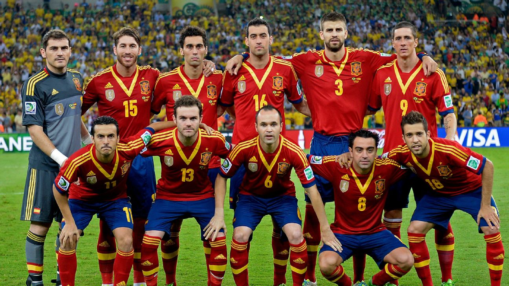
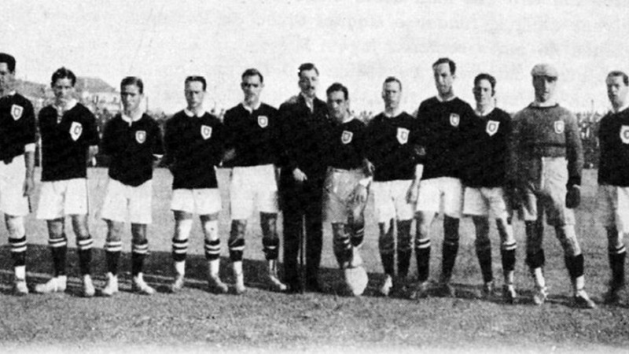
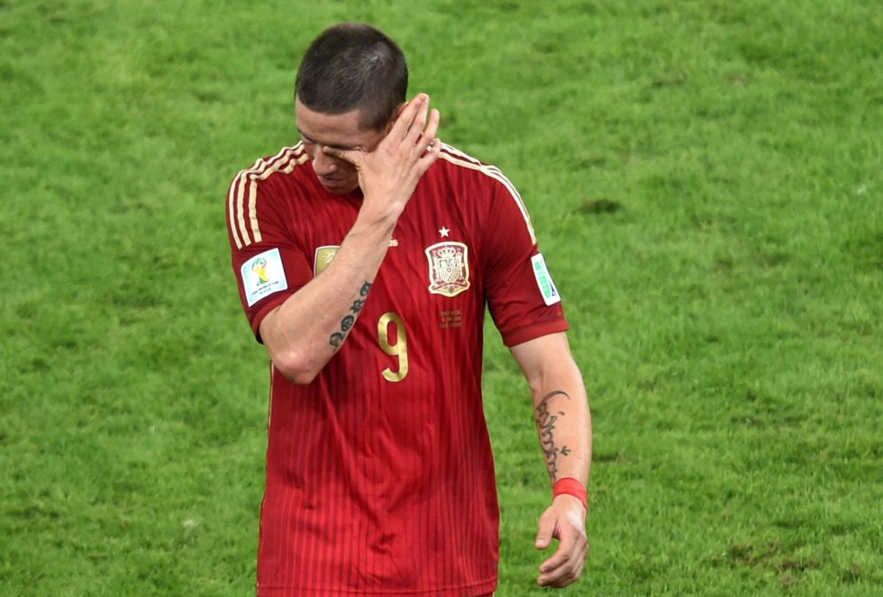
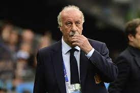

Espanha
É uma das confederações fundadoras da FIFA e um dos países com mais participações em Copas do Mundo. Entre os seus títulos, destacam-se a Copa do Mundo de 2010, os campeonatos europeus de futebol de 1964, 2008 e 2012 e a medalha de ouro nas Olimpíadas de 1992, além de outras duas de prata em 2000 e 1920.
Início da fúria
Em 2005 a Espanha modificou sua forma de jogar futebol e conseguiu se classificar de forma segura para a Copa do Mundo da Alemanha em 2006, com um time recheado de jovens promessas. Com muita habilidade, porém com pouca experiência, os espanhóis passaram de fase e enfrentaram a poderosa França nas oitavas de final.
Apesar de entrar desacreditado, o time espanhol se postou bem em campo, fazendo com que a partida fosse bem disputada e agradou ao público, que aplaudiu o time espanhol na saída de campo mesmo com a derrota. Dois anos mais tarde, a Espanha conquistou o título da Eurocopa derrotando a Alemanha.
O fracasso no Brasil
Na Copa das Confederações FIFA 2013 no Brasil, a Espanha, favorita ao título, chegou à decisão depois de golear o Taiti por 10 a 0 e eliminar a Itália nos pênaltis, mas acabou derrotada pelos donos da casa por 3 a 0 no Maracanã.
Na estreia pela Copa do Mundo FIFA 2014, a Espanha foi goleada pela Holanda na Arena Fonte Nova, por 5 a 1, num dia iluminado de Arjen Robben e Robin van Persie. Na segunda rodada, perdeu para o Chile por 2 a 0. Já eliminada, a Espanha venceu a Austrália por 3 a 0 e se despediu do Mundial.
Fim da era Del Bosque
Na Eurocopa de 2016 a Espanha foi derrotada pela Croácia de virada, por 2 a 1, na terceira rodada, e terminou a fase de grupos em segundo lugar.
Nas oitavas de final foi eliminada pela Itália por 2 a 0. Após a eliminação, Vicente Del Bosque deixou o comando da Seleção Espanhola depois de 8 anos no cargo. Em seu lugar assumiu o também compatriota Julen Lopetegui.